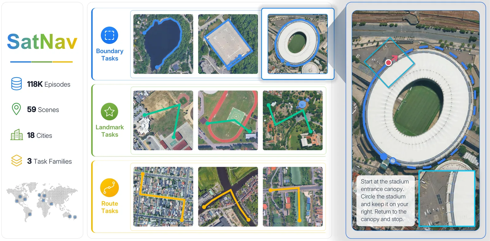
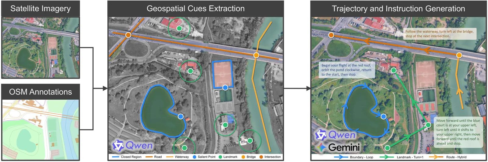
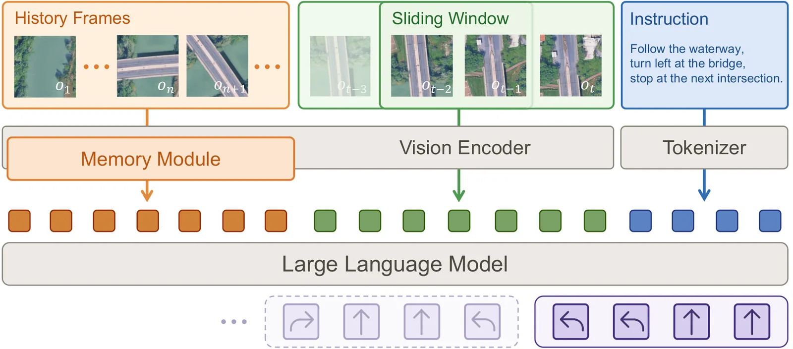
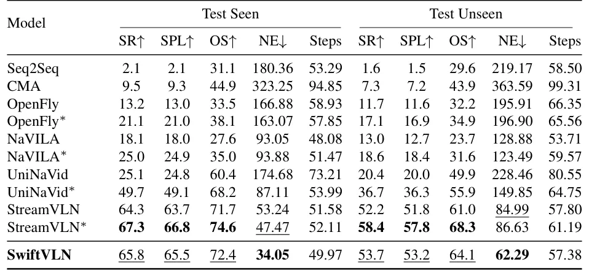

O problema: benchmarks de navegação não escalam para a cidade inteira
Navegação visão-linguagem (VLN) é a tarefa de fazer um agente seguir instruções em linguagem natural enquanto se move por um ambiente visual. A maioria dos benchmarks existentes foca em trajetos curtos—alguns metros dentro de uma casa, por exemplo—e depende de reconstruções 3D caras e trabalhosas. Isso limita a diversidade geográfica e o tamanho dos episódios: é inviável reconstruir uma cidade inteira em 3D para treinar um modelo.
Drones urbanos (UAVs) oferecem um cenário natural para navegação de longo prazo: voos de centenas de metros, múltiplas referências espaciais, necessidade de memória estendida para lembrar onde o agente já passou e o que ainda precisa fazer. Mas os datasets atuais não cobrem essa escala. O SatNav resolve esse gargalo usando imagens de satélite de alta resolução como aproximação da visão nadir (de cima para baixo) do drone, eliminando a necessidade de reconstrução 3D e permitindo gerar episódios automaticamente a partir de mapas abertos.
O benchmark contém 118 mil episódios distribuídos em 59 cenas de 18 cidades, com trajetos que têm em média 379 metros de comprimento. Três famílias de tarefas testam habilidades distintas: Boundary (seguir o perímetro de uma área), Landmark (navegar até marcos usando referências espaciais) e Route (seguir rotas com contagens, como 'vire na terceira interseção'). Cada família força o agente a manter memória de longo prazo e raciocínio geoespacial consistente.

A ideia: gerar episódios automaticamente a partir de mapas abertos
O pipeline de geração do SatNav parte de imagens de satélite de alta resolução e anotações geoespaciais do OpenStreetMap (OSM). O OSM fornece polígonos de edifícios, ruas, rios e outros elementos urbanos. Os autores extraem 'cues' estruturados—pontos de interesse, segmentos de rota, contornos de áreas—e os usam para gerar trajetos longos e instruções ancoradas nesses cues.
Para a família Boundary, o sistema identifica polígonos de edifícios ou parques e gera trajetos que seguem o perímetro, com variantes de arco parcial, loop completo ou loop estendido (múltiplas voltas). Para Landmark, o sistema seleciona um marco de destino e pontos de referência intermediários, gerando instruções como 'vire à esquerda após o prédio vermelho e siga até o estádio'. Para Route, o sistema segue ruas ou rios e injeta cues de contagem ('vire na segunda interseção').
As instruções são geradas por um modelo de linguagem (LLM) a partir dos cues estruturados, garantindo que cada instrução esteja ancorada em elementos verificáveis do mapa. O resultado é um dataset onde cada episódio tem uma trajetória de referência, uma instrução em linguagem natural e uma sequência de crops de satélite ao longo do caminho. Esse pipeline é escalável: adicionar uma nova cidade exige apenas baixar as imagens de satélite e rodar o gerador automático.

SwiftVLN: um framework modular para testar designs de memória
Para avaliar diferentes estratégias de memória de longo prazo, os autores propõem o SwiftVLN, um framework modular onde os componentes de memória são intercambiáveis. A arquitetura base usa um encoder de visão (um LVLM, modelo de visão-linguagem grande) para processar crops de satélite e um decoder de linguagem para gerar ações (virar, seguir em frente, parar).
A memória é dividida em duas partes: memória de curto prazo (uma janela deslizante dos últimos N frames) e memória de longo prazo (frames selecionados de toda a história do trajeto). O SwiftVLN permite trocar a estratégia de seleção da memória de longo prazo sem mexer no resto do modelo. Os autores testam quatro variantes: amostragem uniforme (pega frames espaçados uniformemente), compressão temporal em segmentos (STC, agrupa frames em janelas e comprime cada janela), compressão temporal global (GTC, comprime toda a história de uma vez) e memória de mapa (mantém um mapa top-down das áreas já exploradas).
A configuração de referência usa uma janela de curto prazo de 8 frames sem sobreposição e 8 frames uniformemente amostrados da história como memória de longo prazo. Todas as ablações partem dessa configuração, mudando apenas o componente de memória e mantendo o resto fixo.

Resultados: modelos atuais ainda lutam em navegação urbana de longo prazo
Os autores comparam métodos clássicos de VLN (Seq2Seq, CMA) e agentes baseados em LVLMs recentes (NaVILA, UniNaVid, StreamVLN, OpenFly-Agent). Todos os baselines são treinados ou fine-tunados no split de treino do SatNav e avaliados em dois splits de teste: Test Seen (cenas vistas durante o treino, mas episódios novos) e Test Unseen (cenas de cidades completamente novas).
A métrica principal é Success Rate (SR): o agente é considerado bem-sucedido se parar a menos de 10 metros do alvo (30 metros para tarefas Landmark, que são mais difíceis). Para episódios Boundary, onde o ponto de partida pode coincidir com o alvo, o sucesso só conta se o agente primeiro se afastar mais de 20 metros antes de voltar. Outras métricas incluem SPL (sucesso ponderado pelo comprimento do caminho), Oracle Success (se o agente passou perto do alvo em algum momento), Navigation Error (distância final até o alvo) e número de passos.
Os métodos clássicos ficam muito atrás: Seq2Seq atinge apenas 2,1% de SR em Test Seen e 1,6% em Test Unseen. CMA melhora para 9,5% e 7,3%, mas ainda é insuficiente. Entre os modelos baseados em LVLMs, StreamVLN lidera com 64,3% de SR em Test Seen e 52,2% em Test Unseen quando treinado do zero. Quando fine-tunado a partir de um checkpoint pré-treinado em outra tarefa de navegação, StreamVLN sobe para 67,3% e 58,4%, respectivamente. O SwiftVLN, com a configuração de referência, atinge 65,8% em Test Seen e 53,7% em Test Unseen.
A queda de desempenho entre Test Seen e Test Unseen é consistente em todos os modelos, mostrando que generalizar para novas regiões geográficas é um desafio real. Além disso, SR e SPL são muito próximos na maioria dos casos, indicando que agentes bem-sucedidos seguem caminhos diretos, enquanto desvios grandes são difíceis de corrigir em ambientes abertos de mapa.

Ablações de memória: o que funciona para navegação de longo prazo
Os autores conduzem ablações sistemáticas no SwiftVLN para isolar o efeito de cada componente de memória. Primeiro, testam o tamanho da janela de curto prazo: janelas maiores (16 ou 32 frames) degradam o desempenho, provavelmente porque diluem a atenção do modelo. Janelas menores (4 frames) também pioram, sugerindo que 8 frames é um bom equilíbrio entre contexto recente e eficiência.
Sobreposição entre janelas consecutivas (overlap) traz ganhos pequenos mas consistentes: com 50% de overlap, SR em Test Unseen sobe de 53,7% para 54,3%. Isso sugere que manter continuidade entre janelas ajuda o modelo a rastrear mudanças graduais na cena.
Para memória de longo prazo, amostragem uniforme (baseline) supera todas as outras estratégias testadas. Compressão temporal em segmentos (STC) fica próxima, mas compressão global (GTC) e memória de mapa caem significativamente. A memória de mapa, em particular, degrada o desempenho: os autores atribuem isso ao fato de que o encoder de visão é compartilhado entre mapas explorados e crops de satélite, forçando uma representação comprometida. Um encoder dedicado para mapas poderia resolver isso.
Adicionar a observação inicial como entrada extra melhora Oracle Success mas não SR, indicando que o agente passa perto do alvo mas falha em parar de forma confiável. Codificação de pose relativa (offset espacial entre frames) traz ganhos estáveis, mostrando que informação espacial explícita ajuda o modelo a interpretar a sequência de observações.
Transferência satélite-drone: do mapa para o mundo real
Os autores testam se um modelo treinado em imagens de satélite consegue operar em voos reais. Usam um drone DJI Matrice 4D com câmera nadir, transmitindo vídeo para uma estação de trabalho que roda o SwiftVLN em uma GPU RTX 4090. Constroem 18 episódios reais (6 de cada família de tarefa) em um campo de testes em Shenzhen, China.
As instruções são escritas por humanos e refinadas pelo mesmo pipeline de LLM usado no SatNav, garantindo consistência de estilo. O modelo de referência, treinado apenas em satélite, atinge 38,9% de SR geral nos 18 episódios. Adicionando um adaptador visual leve (uma camada treinável que ajusta as features de satélite para a distribuição de imagens reais), o SR sobe para 55,6%.
Esses resultados mostram que transferência satélite-drone é viável, mas ainda desafiadora. Ambiguidades locais na cena (prédios parecidos, falta de marcos distintos) e incerteza na execução (vento, latência de controle) são fontes comuns de falha. Os autores fornecem análises qualitativas detalhadas de casos representativos no apêndice, incluindo um episódio Boundary em que o drone circunda um prédio de teto cinza, completando o loop com sucesso.
Limitações: ações discretas, falta de RL e poucos voos reais
O SatNav tem três limitações principais. Primeira: a navegação usa quatro ações discretas (frente, esquerda, direita, parar) em altitude fixa. Os trajetos são gerados usando essas ações, e caminhos que exigem outros movimentos são removidos. Isso favorece rotas suaves e limita a cobertura de trajetos sinuosos. Expandir o espaço de ações para incluir mudanças de altitude, velocidade, decolagem e pouso permitiria missões mais diversas.
Segunda: o pipeline de treino atual não suporta fine-tuning por reforço (RL). Treinar apenas em trajetos de referência dá ao agente pouca experiência com estados alcançados após um erro. Adicionar treino por interação poderia ajudar o agente a aprender a se recuperar de desvios e melhorar as decisões de parada em rotas longas.
Terceira: a latência do sistema limita o número de voos de longa duração. A avaliação em 18 episódios reais fornece evidência preliminar de transferência satélite-drone, mas não é estatisticamente exaustiva. O método de transferência atual também usa um adaptador visual simples. Trabalhos futuros podem projetar e avaliar métodos mais eficazes para essa transferência.
O que o SatNav abre
O SatNav oferece um caminho escalável para construir benchmarks de navegação urbana sem depender de reconstruções 3D caras. Ao usar imagens de satélite e anotações abertas do OSM, o dataset pode crescer para novas cidades e países com custo marginal baixo. As três famílias de tarefas transformam desafios de navegação de longo prazo—rastreamento de progresso, ancoragem geoespacial, raciocínio de rota—em alvos de avaliação explícitos.
Os experimentos mostram que agentes clássicos e baseados em LVLMs ainda enfrentam desafios claros em generalizar para ambientes geográficos novos e parar de forma confiável. O estudo de ablação de memória no SwiftVLN oferece uma visão comparativa de designs de memória de longo prazo e orientação para futuros modelos de VLN. As demonstrações reais mostram a viabilidade de implantar modelos treinados em satélite em drones, mas também destacam desafios remanescentes na transferência.
O SatNav não resolve navegação urbana de drones, mas fornece uma base prática para desenvolver e testar agentes de navegação de longo prazo em escala urbana. O benchmark está disponível publicamente, e os autores esperam que ele acelere pesquisa em memória de longo prazo, raciocínio geoespacial e transferência sim-to-real para navegação aérea.
O que fica
- SatNav é um benchmark de 118 mil episódios de navegação urbana por drone, gerados automaticamente a partir de imagens de satélite e mapas abertos, com trajetos de ~380 metros em média.
- Modelos baseados em LVLMs atingem até 67% de taxa de sucesso em cenas conhecidas, mas caem para ~58% em cidades novas, mostrando que generalização geográfica é um desafio real.
- Ablações de memória mostram que amostragem uniforme de frames históricos supera compressão temporal e memória de mapa; janelas de 8 frames com overlap leve funcionam melhor.
- Experimentos reais com um DJI Matrice 4D mostram que modelos treinados em satélite podem operar em voos reais com um adaptador visual leve, mas ambiguidades locais e latência limitam o desempenho.
Paper original: SatNav: A Scalable Benchmark for Long-Horizon UAV Vision-Language Navigation from Satellite Imagery
Comentários
Nenhum comentário ainda. Seja o primeiro.